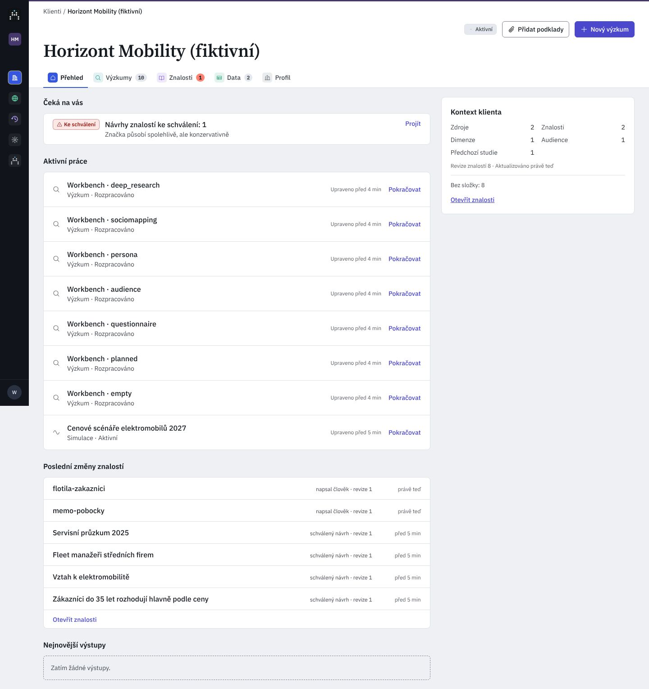

Pivovar Zlatá Hora (fiktivní)
AktivníRodinný pivovar z Vysočiny: tři ležáky a nealko. Výzkum potřebuje k rozhodování o ceně a komunikaci.O klientovi
Rodinný pivovar z Vysočiny: tři ležáky a nealko. Výzkum potřebuje k rozhodování o ceně a komunikaci.O klientovi
Revize znalostí 27 · naposledy schváleno před 1 h
První záložka klienta. Dnes skládá čtyři seznamy pod sebou a vpravo kartu kontextu; hero nese jen jméno, výstupy ukazují kód a změny nejdou otevřít. Kód develop @ a1a9a45c; C/ = apps/web/src/components/aia/clients/, A/ = apps/web/src/components/aia/, W/ = apps/api/src/aia_api/routers/workspace.py.
